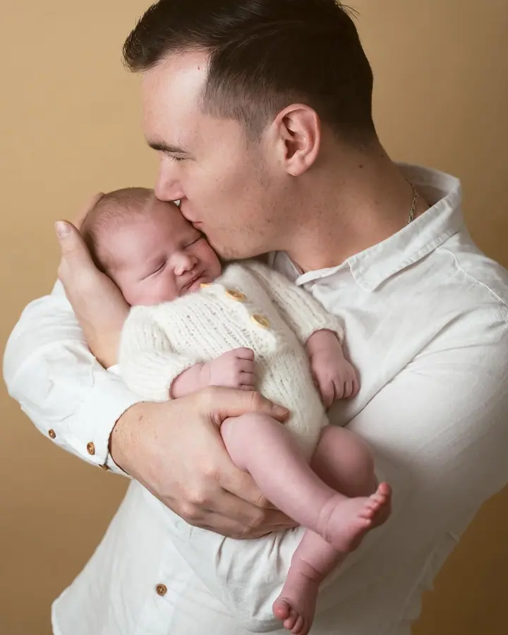
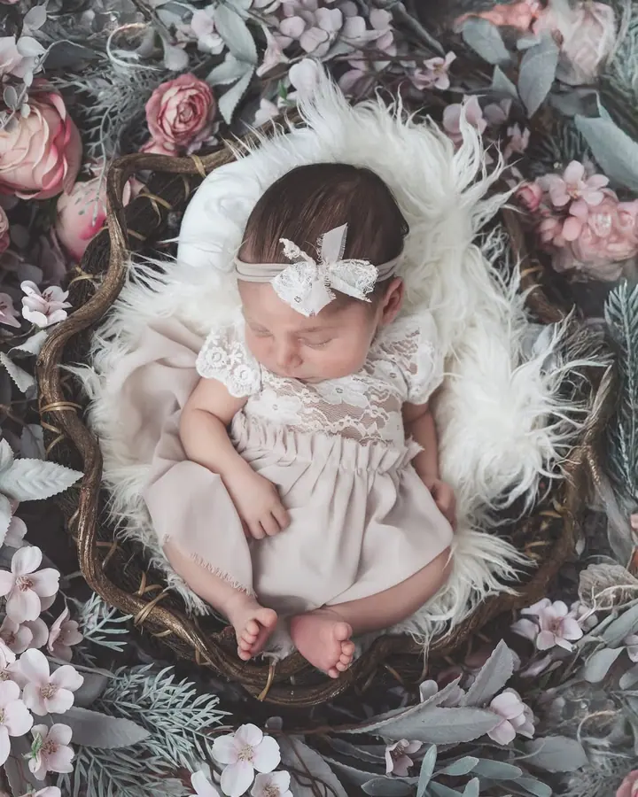
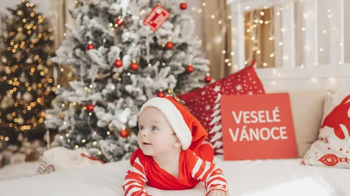

Newborn focení
Focení miminek v prvních dnech života v klidu ateliéru. Jemné oblečky, měkké deky a fineart úpravy, při kterých má miminko čas usnout.

Jmenuji se Hana Slováková a v Chrudimi fotím novorozence, maminky v očekávání i celé rodiny. Mám ráda jemné fineart fotky, klid a čas na to, aby se všichni cítili dobře.
Rezervovat termínNejvíc času trávím u nejmenších. Miminka fotím ve svém ateliéru, kde je teplo, ticho a vše připravené tak, aby se nikam nespěchalo. Oblečky, deky a doplňky ladím do jemných a světlých tónů, aby fotky vydržely i za mnoho let.


Moc ráda fotím také těhotné maminky, nejčastěji venku v přírodě, kde nám pomáhá zapadající slunce. K tomu rodiny, děti, sourozence a také svatby.
Na focení si nemusíte nic nacvičovat. Povedu vás, a když se miminko zrovna nechce nechat fotit, prostě chvilku počkáme.
Co fotím
Focení miminek v prvních dnech života v klidu ateliéru. Jemné oblečky, měkké deky a fineart úpravy, při kterých má miminko čas usnout.
Fotky bříška pro maminku nebo pro oba rodiče. Fotíme venku v přírodě, v lese nebo na louce za teplého světla.
Rodiče, sourozenci i nejmenší členové rodiny na společných fotkách. Fotíme v ateliéru i venku.
Fotím i svatby. Ráda s vámi probereme, jak si svůj den představujete.
Postup
Napište mi e-mail nebo zavolejte. Domluvíme se, jaké focení si přejete a kdy se vám hodí.
Probereme oblečení, barvy a místo. U newborn focení vám řeknu, jak se na den v ateliéru připravit.
Fotíme v klidu a bez spěchu, v ateliéru nebo venku. Přestávky na krmení a mazlení jsou samozřejmost.
Vyberete si z fotek a já je pečlivě upravím do jemného, sladěného stylu.
Otázky
Ideálně v prvních dnech až týdnech po porodu, kdy miminko hodně spí. Termín je dobré domluvit už během těhotenství a upřesnit ho po narození.
Obvykle v posledních týdnech těhotenství, kdy je bříško krásně vidět a maminka se ještě cítí dobře. Konkrétní termín spolu doladíme.
Pro miminka mám v ateliéru připravené oblečky, deky a doplňky. Rodičům ráda poradím, co si obléct, aby fotky ladily.
Newborn a rodinné focení probíhá v mém ateliéru v Chrudimi, těhotenské a rodinné fotky ráda fotím i venku v přírodě.